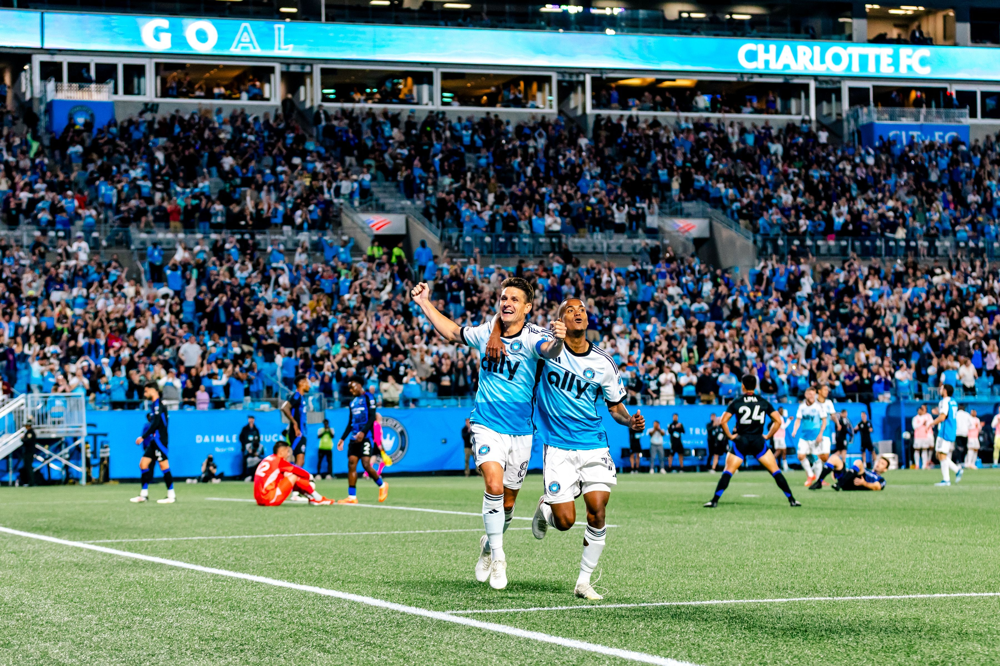
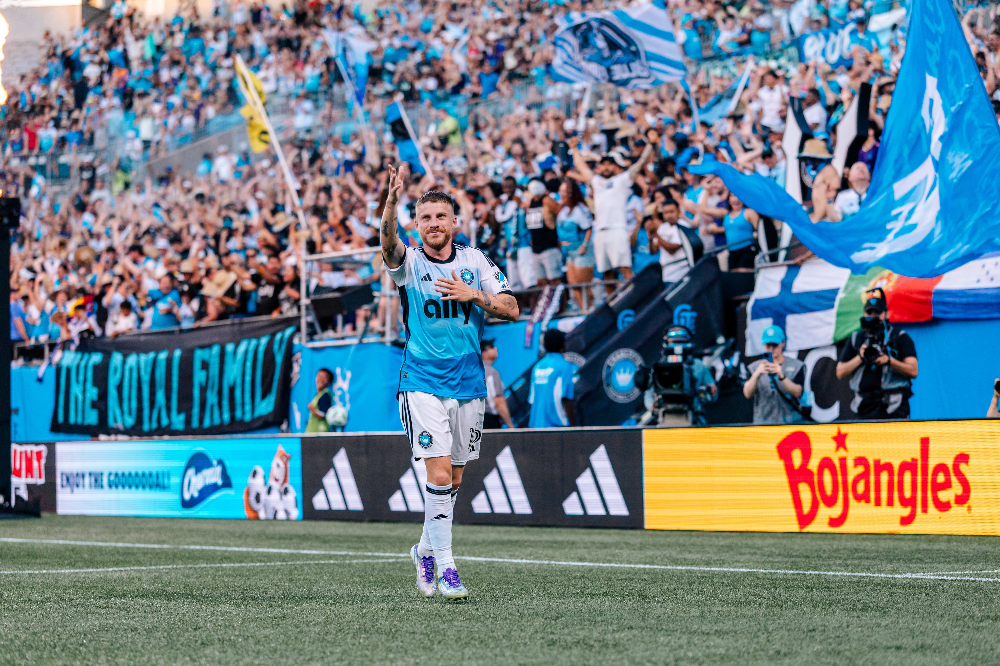

A Fan's Guide to Charlotte FC
Everything you need to know about Charlotte's major league soccer club.
by Arielle Patterson Jun 23, 2025
Charlotte FC
This blog is brought to you in partnership with Charlotte FC

An electric energy fills the air at Bank of America Stadium when the Charlotte Football Club runs onto the pitch. With fans donning their process blue and black, it’s easy to get swept up in the excitement whether it’s your first or fiftieth match. If you’re ready to experience the thrill of Major League Soccer in Charlotte, here’s everything you need to know about attending a Charlotte FC match.
Charlotte FC Schedule & Promotions
Charlotte FC’s season runs from late February/early March through October, with a number of weekly specials, match-day promotions and theme nights throughout the season. The team welcomed fans for the home opener with limited-edition CLTFC snapback hats. Be sure to check the Charlotte FC promotions schedule for a list of giveaways by match, including t-shirts, an inflatable crown and more.
Charlotte FC Match Days
Passionate fans come from across the Queen City and beyond to attend Charlotte FC matches. In fact, the team’s first home match in 2022 set an MLS single-match attendance record with a crowd of 74,479.
While the on-pitch action is exciting, Charlotte FC supporters help make match days at “The Fortress” such an electrifying experience. Charlotte FC averages more than 30,000 fans at Bank of America Stadium for home matches—the second-highest in the league. With such loud, booming cheers for the mighty black and blue, it’s no wonder the team holds a winning record at home.
The most lively CLTFC fans sit in the Supporters Section, located on the lower level behind the east goal. This is where you’ll feel the most energy in the stadium, where fans sing, cheer and stay on their feet for the full 90-minute match. The Supporters Section helps create a party-like atmosphere on match days.
Head to Uptown before kickoff for pre-match festivities. Before each home match, the supporters group Mint City Collective hosts a family-friendly tailgate at 703 McNinch St. Purchase food and drinks as you soak up the energy from other eager fans. The group leads a flag-waving procession to Bank of America Stadium set to the sound of drum beats and team chants.
Ten minutes before kickoff, take your seat for the pre-match show featuring a royal coronation, color guard, the national anthem and The Fortress video that really gets the crowd hype and sets the tone for the rest of the match.
When the team isn’t playing at home at Bank of America Stadium, you can attend a watch party with fellow CLTFC fans. While the online schedule does list some official watch parties at venues across the city, local supporters groups also host them at area sports bars.
Charlotte FC in the Community
Off the pitch, Charlotte FC is committed to serving the local community, as well as communities across the Carolinas, through grassroots programs and initiatives. Greater Goals provides free after school soccer and literacy programming for Title I elementary schools. Pitches for Progress is an initiative that installs mini soccer pitches in at-risk communities. Each pitch comes with a character-based mentoring curriculum and soccer programming.

Arielle Patterson
Arielle is the Digital Content Specialist for the Charlotte Regional Visitors Authority. A Baltimore native, Arielle quickly fell in love with everything the Queen City has to offer after her first visit. When she's not writing and editing, she's indulging in Charlotte's culinary scene or at home watching reality television.
© 2025 Charlotte Regional Visitors Authority. All Rights Reserved.